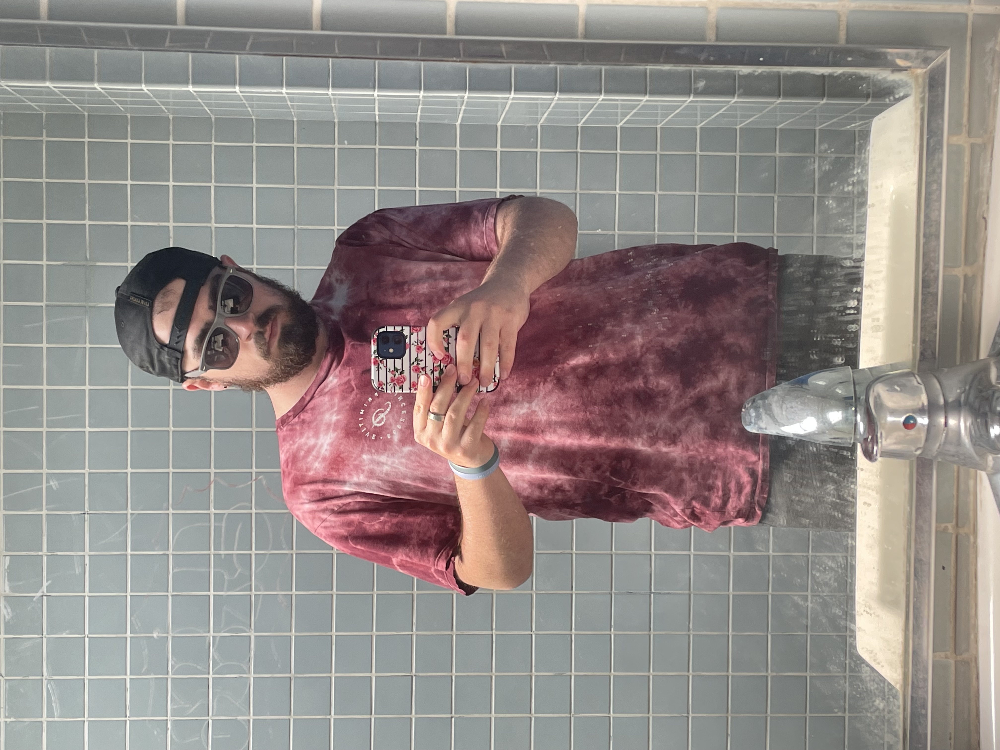
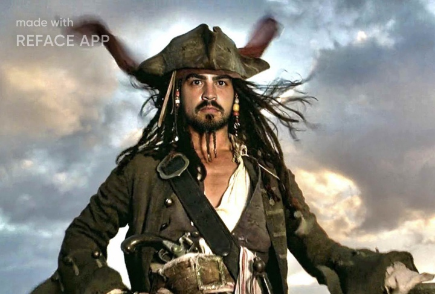
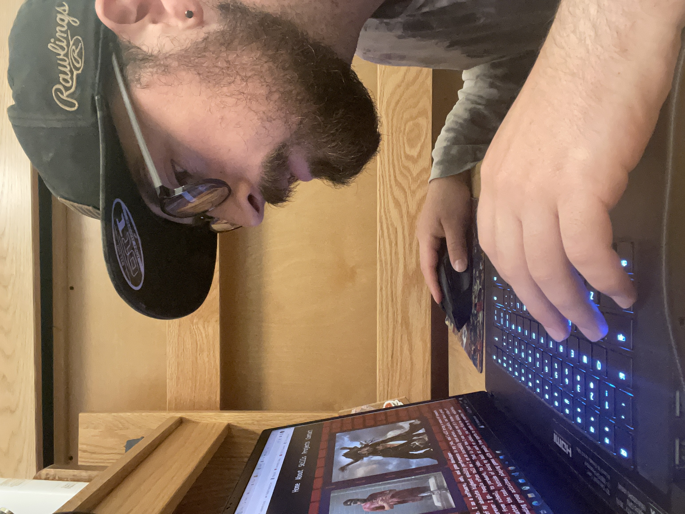

Hi! My name is Brayden Smith. I am a software, web, and game developer.
I guarantee nothing short of my absolute highest quality performance in any job, and I will bring a sense of teamwork and new creative ideas wherever I go.
People often tell me I am an incredibly hard worker, reliable, and have a great work ethic. I try my best from school, to yardwork, to jobs. That is just how I was raised and it's become a value of mine to do my best, no matter the task.
Outside of doing my best at work or school, you can find me hiking, exploring, trying new things, attending group activites, playing games with people from sports to cards to my computer, and meeting new people.


My Journey
I am currently a junior at UCSC studying Computer Science: Compuer Science Game Design, as my major. I have taken big interest in many other fields of computer Science
that we talked about and studied in other classes I have taken. I have great interest in ML and AI algorithms and applications alongside data science. I also have interest
in cyber security, and of course Game Design.
Games have always been an important part of my life. As a child I remember in elementary school I was always trying to think of the new recess game, and to much success
actually successfully had whole classes of people playing games I came up with. Lets not forget the release of the nintendo DS and Wii. I remember bonding with my sister and
father as we played games together, really bringing us closer together. Later on in middle school, I remember getting my first pc game, Skyrim, and I was HOOKED.
I remember telling my friend, "This is what I want to do! I want to make games and create worlds." My sister and I turned to games like Minecraft and Terraria now, although we
still hop on Mario and Mario Kart today. Flash forward, to 8th grade, I was hit with a pivotal moment in my life
that changed lots of my perspectives. I had been diagnosed with 4th stage cancer, Burkitts Lymphoma. Although, a lot of the time I was too sick to do things, games were a
really good solace from the pain. It is insane the power that art like games can hold in peoples lives and what they can mean to people. I became cancer free by the end of
the school year and graduated middle school with my class after staying on top of my work, which wasn't easy. After this, I began to become more of an extroverted person.
I threw myself into theatre to work on my social skills and gained a lot more confidence than I had previously had. I grew very fond of playing cards and would often play all
sorts of games with my friends to this day. I am always carrying cards with me and teaching strangers new games. My girlfriend and I have been together for 5 years now and I
can confidently say games have also brought us together, we play Monopoly Deal almost every time we are together.
I don't think a lot of people realize the way games bond us together or support us in times of need. They help us grow and cope.
I want to be able to give that to people.
The same importance can also be applied easily to new advancements in technology. I am definitely passionate about AI, and I truly believe
that it will replace search engines.
